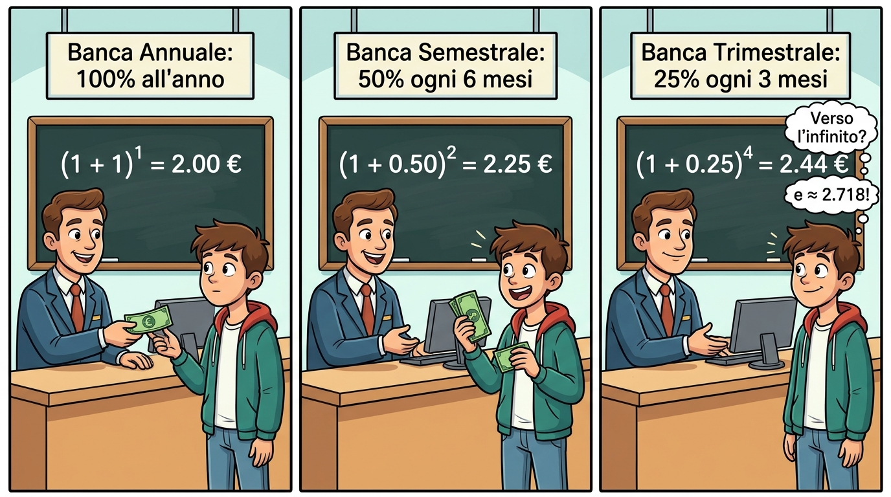
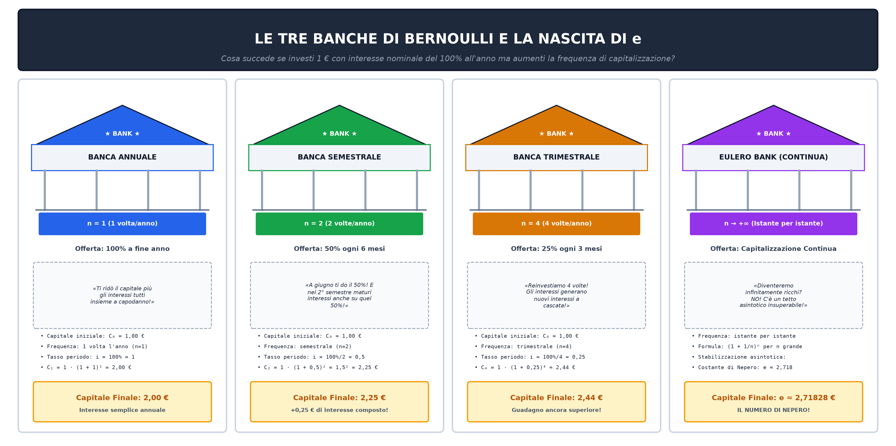
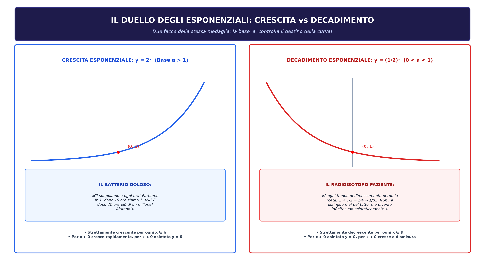

Quaderno del Prof – Matematica 4F
Compendio Multimediale Interattivo su 31 Pagine Autentiche di Lezione: Esponenziali, Logaritmi e Goniometria
📘 Quadro Didattico del Corso – Matematica 4F Modulo Integrato
Cari ragazzi, questa lezione multimediale raccoglie e sistematizza in modo rigoroso l'intero percorso svolto in classe su funzioni esponenziali, teoria e teoremi dei logaritmi, risoluzione grafica di equazioni trascendenti, studio qualitativo di funzioni fratte e goniometria.
Negli appunti del quaderno sono spesso tracciati solo i passaggi algebrici sintetici e i grafici finali. Qui invece analizziamo la deduzione formale completa, il significato geometrico profondo, le simulazioni interattive e la confutazione degli errori più insidiosi rilevati nelle vostre verifiche.
- Area 1: Il Numero \(e\) e la Funzione Esponenziale: Dal problema economico di Jacob Bernoulli alla biforcazione di monotonia per \(a > 1\) e \(0 < a < 1\).
- Area 2: Teoria dei Logaritmi: Inversione funzionale, simmetria rispetto a \(y = x\) e ruolo vincolante delle Condizioni di Esistenza.
- Area 3: Analisi Cartesiana: Studio qualitativo di \(y = \frac{e^x - 1}{e^x - 2}\) e discussione parametrica di \(|2^x - 1| = k\).
- Area 4: Goniometria e Dinamica delle Onde: Circonferenza unitaria, proiezione cinematica del seno e protocollo a stadi intermedi delle trasformazioni d'onda.

📈 La Genesi del Numero \(e\): La Costante di Nepero e la Scoperta di Bernoulli Modulo 1
Il numero di Nepero \(e\) emerge studiando l'espressione ad esponente reale \(\left(1 + \frac{1}{n}\right)^n\) quando l'indice di frazionamento temporale \(n\) cresce indefinitamente verso valori sempre più grandi:
\[ \left(1 + \frac{1}{n}\right)^n \xrightarrow[\text{per } n \text{ grandissimo}]{} e \approx 2{,}718281828459\dots \]All'aumentare di \(n\) (capitalizzazione istante per istante), i valori non esplodono all'infinito ma si stabilizzano asintoticamente attorno a questo valore invalicabile. Si tratta di una costante universale fondamentale della matematica e della fisica, numero irrazionale (dimostrato da Eulero nel 1737) e trascendente (dimostrato da Hermite nel 1873).
Consideriamo un capitale iniziale \(C = 1000\) € depositato ad un tasso nominale annuo del \(100\%\) (\(r = 1\)). Se gli interessi vengono accreditati e ricapitalizzati in \(n\) intervalli uguali durante l'anno, il montante finale a 12 mesi è:
\[ M_n = C \left(1 + \frac{1}{n}\right)^n \]- \(n = 1\) (Capitalizzazione Annuale): \(M_1 = 1000 \cdot (1 + 1)^1 = 2000\) €. Guadagno netto: \(1000\) €.
- \(n = 2\) (Capitalizzazione Semestrale): \(M_2 = 1000 \cdot (1 + 0{,}5)^2 = 1000 \cdot 2{,}25 = 2250\) €.
Osservazione fondamentale: Guadagniamo \(250\) € in più perché al secondo semestre maturano interessi anche sui \(500\) € di interessi maturati a metà anno! È il principio dell'interesse sull'interesse. - \(n = 4\) (Trimestrale): \(M_4 = 1000 \cdot (1 + 0{,}25)^4 \approx 2441{,}41\) €.
- \(n = 12\) (Mensile): \(M_{12} = 1000 \cdot (1 + 1/12)^{12} \approx 2613{,}04\) €.
- \(n = 365\) (Giornaliero): \(M_{365} = 1000 \cdot (1 + 1/365)^{365} \approx 2714{,}57\) €.
NO! Molti studenti ritengono erroneamente che capitalizzando istante per istante (con frequenza \(n\) arbitrariamente grande) la ricchezza esploda. In realtà, mentre il numero di periodi \(n\) aumenta a dismisura, la frazione di interesse \(1/n\) maturata in ciascun intervallo diventa infinitesima. La funzione è soggetta alla legge dei rendimenti marginali decrescenti: la crescita rallenta e sbatte contro il tetto asintotico invalicabile di \(1000 \cdot e \approx 2718{,}28\) €!
La Metafora Didattica delle Banche: Immaginiamo tre banche in fila. La prima offre il 100% all'anno (\(n=1\)), la seconda il 50% ogni 6 mesi (\(n=2\)), la terza il 25% ogni 3 mesi (\(n=4\)). A ogni frazionamento, gli interessi maturati iniziano a produrre a loro volta nuovi interessi prima del termine dell'anno! Questo porta alla domanda: «Se una banca capitalizzasse ogni secondo o istante per istante (\(n \to +\infty\)), diventeremmo infinitamente ricchi?»


📈 Proprietà e Monotonia della Funzione Esponenziale Modulo 1
Data una base reale costante \(a > 0\) con \(a \neq 1\), si definisce funzione esponenziale elementare la funzione:
\[ f: \mathbb{R} \to (0, +\infty), \quad y = a^x \]- Dominio Naturale: \(\mathcal{D} = \mathbb{R} = (-\infty, +\infty)\). L'esponente può assumere qualunque valore reale.
- Codominio (Insieme Immagine): \(\mathcal{I} = \mathbb{R}^+ = (0, +\infty)\). La funzione è strettamente positiva: \(a^x > 0 \quad \forall x \in \mathbb{R}\). Non tocca mai l'asse \(x\)!
- Punto Fisso Fondamentale: Il grafico passa sempre per \(P(0, 1)\) poiché \(a^0 = 1\) per ogni base \(a > 0\).
- Iniettività Globale: \(a^{x_1} = a^{x_2} \iff x_1 = x_2\). Consente di uguagliare direttamente gli esponenti nelle equazioni.
| Parametro Base | Monotonia | Comportamento per \(x\) negativi grandi | Comportamento per \(x\) positivi grandi | Asintoto Orizzontale |
|---|---|---|---|---|
| \(a > 1\) | Strettamente Crescente | Si schiaccia su \(y = 0\) (\(a^x \to 0\) senza toccarlo) | Crescita esplosiva verso l'alto (\(a^x \to +\infty\)) | \(y = 0\) (Asintoto orizzontale a sinistra) |
| \(0 < a < 1\) | Strettamente Decrescente | Cresce verso l'alto a sinistra (\(a^x \to +\infty\)) | Si schiaccia su \(y = 0\) (\(a^x \to 0\) a destra) | \(y = 0\) (Asintoto orizzontale a destra) |
La variazione della base \(a\) determina due comportamenti asimmetrici radicali nel mondo reale: la duplicazione biologica senza freni (\(a > 1\)) e l'estinzione asintotica per dimezzamento (\(0 < a < 1\)).

✏️ Tipologie di Equazioni Esponenziali e Metodi Risolutivi Modulo 1
- Se \(b \le 0\): Impossibile nel campo reale, poiché \(a^{f(x)} > 0 \quad \forall x\). Ad esempio, \(3^x = -4 \implies \emptyset\).
- Se \(b > 0\): Esiste un'unica soluzione reale data da \(f(x) = \log_a b\).
Risolvere l'equazione notevole del compito:
\[ 2^{2x} - 5 \cdot 2^x + 4 = 0 \]- Scomposizione potenze: \(2^{2x} = (2^x)^2\). Poniamo \(t = 2^x\), con vincolo tassativo \(t > 0\).
- Risoluzione ausiliaria: \(t^2 - 5t + 4 = 0 \implies (t - 1)(t - 4) = 0 \implies t_1 = 1, \ t_2 = 4\). Entrambe accettabili poiché positive.
- Ritorno alla variabile originaria \(x\):
- \(2^x = 1 \implies 2^x = 2^0 \implies x_1 = 0\)
- \(2^x = 4 \implies 2^x = 2^2 \implies x_2 = 2\)
Se la risoluzione in \(t\) fornisce una radice negativa (ad esempio \(t = -3\)), non dovete MAI scrivere \(x = \dots\)!
L'uguaglianza \(2^x = -3\) non ammette soluzioni. La radice negativa va dichiarata immediatamente inaccettabile.

📊 Risoluzione Grafica di Equazioni Trascendenti Miste Modulo 1
Quando l'incognita compare sia ad esponente che in un polinomio algebrico, l'equazione è detta trascendente mista e non può essere risolta isolando algebricamente la \(x\).
Si decompone l'equazione nell'intersezione di due curve note nel piano cartesiano:
\[ \begin{cases} y = 2^x & \text{(Esponenziale strettamente crescente)} \\ y = 1 - x^2 & \text{(Parabola concava con vertice in } V(0, 1)\text{)} \end{cases} \]- Prima radice esatta (\(x_1 = 0\)): Verificata per ispezione diretta: \(2^0 = 1 = 1 - 0^2\). Il punto \(P_1(0, 1)\) è comune ad entrambe le curve.
- Seconda radice approssimata (\(x_2 \approx -0{,}715\)): Nel secondo quadrante (\(x < 0\)), l'esponenziale scende verso l'asintoto mentre la parabola sale verso il vertice. Si intersecano nel punto \(P_2(-0{,}715;\, 0{,}489)\).
- Unicità e Delimitazione Rigorosa delle Soluzioni (Metodo degli Intervalli):
- Per \(x > 0\): \(2^x > 1\) mentre \(1 - x^2 < 1\) (nessuna intersezione possibile).
- Per \(x \le -1\): la parabola è non positiva (\(1 - x^2 \le 0\)) mentre l'esponenziale è strettamente positiva (\(2^x > 0\)).
- Dunque le uniche intersezioni nell'intero asse reale sono esattamente \(x_1 = 0\) e la radice \(x_2 \approx -0{,}715 \in (-1, 0)\).
⚖️ Disequazioni Esponenziali e Regola Aurea del Verso Modulo 1
Nel passaggio dal confronto tra potenze \(a^{f(x)} > a^{g(x)}\) al confronto tra gli esponenti:
| Base \(a\) | Monotonia Funzione | Azione sul Verso della Disuguaglianza | Equivalenza Logica |
|---|---|---|---|
| \(a > 1\) | Strettamente Crescente | IL VERSO SI CONSERVA | \(a^{f(x)} > a^{g(x)} \iff f(x) > g(x)\) |
| \(0 < a < 1\) | Strettamente Decrescente | IL VERSO SI INVERTE TASSATIVAMENTE | \(a^{f(x)} > a^{g(x)} \iff f(x) < g(x)\) |
Risolvere la disequazione: \(\left(\frac{1}{2}\right)^{x^2 - 3} \ge \left(\frac{1}{2}\right)^{2x}\)
- La base è \(a = 1/2\). Poiché \(0 < 1/2 < 1\), invertiamo il verso: \[ x^2 - 3 \le 2x \iff x^2 - 2x - 3 \le 0 \]
- Fattorizzazione trinomio: \((x - 3)(x + 1) \le 0\).
- Soluzione corretta: valori interni \(-1 \le x \le 3\), ovvero l'intervallo \([-1, 3]\).
Se lo studente dimentica di invertire il verso e scrive \(x^2 - 3 \ge 2x\), trova erroneamente i valori esterni \(x \le -1 \lor x \ge 3\). Questo intervallo è il complementare opposto di quello corretto: per \(x = 0\) (che cadrebbe nella soluzione errata come esclusa) avremmo \((1/2)^{-3} = 8\) e \((1/2)^0 = 1\), ed essendo \(8 \ge 1\) la disequazione è palesemente verificata!
📐 Teoria dei Logaritmi e Teoremi con Dimostrazione Modulo 2
Dati due numeri reali \(a > 0, a \neq 1\) (base) e \(b > 0\) (argomento), si definisce logaritmo in base \(a\) di \(b\) l'esponente \(x\) a cui elevare la base per ottenere l'argomento:
\[ x = \log_a b \iff a^x = b \]Da cui l'identità fondamentale: \(a^{\log_a b} = b \quad \forall b > 0\).
- Teorema del Prodotto: \(\log_a(x \cdot y) = \log_a x + \log_a y \quad (\forall x, y > 0)\)
Dimostrazione: Poniamo \(\alpha = \log_a x\) e \(\beta = \log_a y\). Per definizione: \(x = a^\alpha\) e \(y = a^\beta\). Moltiplicando membro a membro: \(x \cdot y = a^\alpha \cdot a^\beta = a^{\alpha + \beta}\). Riapplicando la definizione di logaritmo: \(\log_a(x \cdot y) = \alpha + \beta = \log_a x + \log_a y \quad \blacksquare\). - Teorema del Quoziente: \(\log_a\left(\frac{x}{y}\right) = \log_a x - \log_a y \quad (\forall x, y > 0)\)
Dimostrazione: Dividendo membro a membro: \(\frac{x}{y} = \frac{a^\alpha}{a^\beta} = a^{\alpha - \beta} \implies \log_a(x/y) = \alpha - \beta = \log_a x - \log_a y \quad \blacksquare\). - Teorema della Potenza: \(\log_a(x^k) = k \cdot \log_a x \quad (\forall x > 0, k \in \mathbb{R})\)
Dimostrazione: Elevando ambo i membri di \(x = a^\alpha\) alla potenza \(k\): \(x^k = (a^\alpha)^k = a^{k\alpha} \implies \log_a(x^k) = k\alpha = k \log_a x \quad \blacksquare\). - Formula del Cambio di Base: \(\log_a b = \frac{\log_c b}{\log_c a} = \frac{1}{\log_b a} \quad (\forall a, b, c > 0; a, c \neq 1)\)
Dimostrazione: Poniamo \(x = \log_a b \implies a^x = b\). Applichiamo ad ambo i membri il logaritmo in una nuova base \(c\): \(\log_c(a^x) = \log_c b \implies x \log_c a = \log_c b \implies x = \frac{\log_c b}{\log_c a} \quad \blacksquare\).
🪞 Funzione Logaritmica e Simmetria Speculare con l'Esponenziale Modulo 2
Essendo strettamente monotona e biiettiva da \(\mathbb{R}\) su \((0, +\infty)\), la funzione esponenziale è invertibile:
\[ f^{-1}: (0, +\infty) \to \mathbb{R}, \quad y = \log_a x \]- Dominio: \(\mathcal{D} = (0, +\infty)\) ← Coincide con il codominio dell'esponenziale!
- Codominio: \(\mathcal{I} = \mathbb{R}\) ← Coincide con il dominio dell'esponenziale!
- Asintoto Verticale: La retta \(x = 0\) (asse \(y\)). Infatti per \(a > 1\), man mano che \(x\) si avvicina a \(0\) da destra (\(x \to 0^+\)), la curva scende indefinitamente verso il basso lungo l'asse \(y\) senza mai toccarlo.
- Intersezione Asse \(x\): Passa per \(P(1, 0)\) poiché \(\log_a 1 = 0\).
I grafici di \(y = a^x\) e \(y = \log_a x\) sono geometricamente simmetrici rispetto alla retta \(y = x\):
\[ P(x_0, y_0) \in \text{Grafico}(a^x) \iff P'(y_0, x_0) \in \text{Grafico}(\log_a x) \]Esempi di coppie riflesse: \((0, 1) \leftrightarrow (1, 0)\), \((1, 2) \leftrightarrow (2, 1)\), \((2, 4) \leftrightarrow (4, 2)\).
Condizioni di Esistenza Tassative ed Esempio Guida (Pagina 26) Modulo 2
Le Condizioni di Esistenza (C.E.) vanno determinate SEMPRE SUL TESTO ORIGINALE, prima di manipolare l'espressione con i teoremi dei logaritmi.
Infatti: \(\log_a [f(x) \cdot g(x)]\) richiede solo che il prodotto sia positivo (\(f(x) \cdot g(x) > 0\)), ammettendo anche il caso in cui entrambi siano negativi (\((-)\cdot(-) = +\)). Ma la somma originaria \(\log_a f(x) + \log_a g(x)\) impone che siano entrambi strettamente positivi!
Disequazione assegnata: \(\log_2(x - 1) + \log_2(x - 3) \le 3\)
Si impone la positività rigorosa degli argomenti sul testo originario, prima di applicare qualsiasi proprietà dei logaritmi: \[\begin{cases} x - 1 > 0 \implies x > 1 \\ x - 3 > 0 \implies x > 3 \end{cases} \implies \mathbf{C.E.:\; x > 3}\]
Nel dominio \(x > 3\), accorpando i logaritmi mediante il teorema del prodotto ed esponenziando in base \(2 > 1\) (conservando il verso della disuguaglianza): \[ \log_2[(x - 1)(x - 3)] \le 3 \iff (x - 1)(x - 3) \le 2^3 = 8 \] \[ x^2 - 4x + 3 \le 8 \iff x^2 - 4x - 5 \le 0 \iff (x - 5)(x + 1) \le 0 \implies -1 \le x \le 5 \]
Intersecando l'insieme delle soluzioni algebriche \([-1, 5]\) con il campo di esistenza \(x > 3\): \[ \mathcal{S} = [-1, 5] \cap (3, +\infty) = \mathbf{(3, 5]} \]
Data la funzione \(f(x) = 2\log_2(a + |x - 1|) - 4\), con \(a \in \mathbb{R}\):
- Dominio \(\mathbb{R}\): \(a + |x - 1| > 0 \iff a > 0\);
- Condizione \(f(2) = 0\): \(2\log_2(a + 1) = 4 \implies a + 1 = 4 \implies \mathbf{a = 3}\);
- Retta secante per \(x = 2\) e \(x = 6\): passa per \(P_1(2, 0)\) e \(P_2(6, 2)\) con pendenza \(m = 1/2 \implies \mathbf{g(x) = \frac{1}{2}x - 1}\);
- Risoluzione grafica di \(f(x) \ge g(x)\): per la concavità verso il basso della curva logaritmica e la simmetria rispetto all'asse \(x = 1\), la curva sovrasta la retta per \(x \in [2, 6]\) e per \(x \le \alpha \approx 0{,}74\).
🔬 Studio Completo di Funzione Fratta Esponenziale (Es. 956) Modulo 3
- 1. Determinazione del Dominio: Il denominatore non deve annullarsi: \[ e^x - 2 \neq 0 \iff e^x \neq 2 \iff x \neq \ln 2 \approx 0{,}693 \] \[ \mathcal{D} = (-\infty, \ln 2) \cup (\ln 2, +\infty) \]
- 2. Intersezioni con gli Assi Cartesiani:
- Asse \(y\) (\(x = 0\)): \(y(0) = \frac{e^0 - 1}{e^0 - 2} = \frac{0}{-1} = 0 \implies O(0, 0)\)
- Asse \(x\) (\(y = 0\)): \(e^x - 1 = 0 \iff e^x = 1 \iff x = 0 \implies O(0, 0)\)
- 3. Studio del Segno della Frazione:
- Numeratore \(N(x) \ge 0 \iff e^x \ge 1 \iff x \ge 0\).
- Denominatore \(D(x) > 0 \iff e^x > 2 \iff x > \ln 2\).
- Quadro dei Segni:
- Per \(x < 0\): \(\frac{-}{-} = \mathbf{+}\) (Funzione positiva)
- Per \(0 < x < \ln 2\): \(\frac{+}{-} = \mathbf{-}\) (Funzione negativa)
- Per \(x > \ln 2\): \(\frac{+}{+} = \mathbf{+}\) (Funzione positiva)
- 4. Comportamento Asintotico ai Bordi del Dominio:
- Asintoto verticale \(x = \ln 2 \approx 0{,}693\): Il denominatore si annulla per \(e^x = 2\). Avvicinandosi a questo valore da destra la frazione assume valori enormi positivi (\(+\infty\)), mentre avvicinandosi da sinistra assume valori negativi sempre più profondi (\(-\infty\)).
- Asintoto orizzontale destro (\(y = 1\)): Per valori di \(x\) positivi molto grandi, l'esponenziale \(e^x\) prevale sulle costanti \(1\) e \(2\); la frazione si comporta come \(\frac{e^x}{e^x} = 1\), avvicinandosi indefinitamente alla retta orizzontale \(y = 1\) dall'alto.
- Asintoto orizzontale sinistro (\(y = \frac{1}{2}\)): Per valori di \(x\) negativi sempre più grandi in modulo, \(e^x\) si schiaccia verso \(0\); sostituendo otteniamo \(y \approx \frac{0 - 1}{0 - 2} = \frac{1}{2}\), per cui la curva si stabilizza indefinitamente lungo la retta orizzontale \(y = \frac{1}{2}\) dal basso.
📐 Discussione Parametrica con Valore Assoluto: \(|2^x - 1| = k\) Modulo 3
Discutere il numero di soluzioni reali al variare di \(k \in \mathbb{R}\) equivale a studiare le intersezioni tra:
\[ \begin{cases} y = |2^x - 1| & \text{(Curva fissa con ribaltamento del modulo)} \\ y = k & \text{(Fascio improprio di rette orizzontali parallele all'asse } x\text{)} \end{cases} \]Costruzione della curva: \(y = 2^x - 1\) attraversa l'origine \(O(0, 0)\) e ha asintoto \(y = -1\) per \(x \to -\infty\). Applicando il valore assoluto, il ramo negativo \(x < 0\) viene ribaltato verso l'alto: l'asintoto \(y = -1\) ribaltandosi diventa il nuovo asintoto sinistro \(y = +1\)!
⚪ Fondamenti di Goniometria e Generazione della Sinusoide Modulo 4
La circonferenza goniometrica ha raggio unitario \(R = 1\) ed equazione cartesiana \(x^2 + y^2 = 1\). Dato l'angolo al centro \(\alpha\) misurato in radianti:
\[ P(\cos\alpha, \sin\alpha) \iff \begin{cases} x_P = \cos\alpha & \text{(Proiezione orizzontale)} \\ y_P = \sin\alpha & \text{(Proiezione verticale)} \end{cases} \]- Prima Relazione Fondamentale (Teorema di Pitagora): \(\cos^2\alpha + \sin^2\alpha = 1 \quad \forall \alpha \in \mathbb{R}\).
- Seconda Relazione Fondamentale (Tangente): \(\tan\alpha = \frac{\sin\alpha}{\cos\alpha}\), ordinata del punto sulla retta \(x = 1\) e coefficiente angolare \(m = \tan\alpha\).
- Tecnica Mnemonica \(\frac{\sqrt{n}}{2}\): Per \(0, \pi/6, \pi/4, \pi/3, \pi/2\) il seno vale rispettivamente \(\frac{\sqrt{0}}{2}=0\), \(\frac{\sqrt{1}}{2}=\frac{1}{2}\), \(\frac{\sqrt{2}}{2}\), \(\frac{\sqrt{3}}{2}\), \(\frac{\sqrt{4}}{2}=1\)!
🌊 Protocollo Canonico delle Trasformazioni Geometriche su Onde Modulo 4
Data una funzione d'onda generica \(y = a \sin(bx + c) + d\), NON bisogna mai interpretare \(+c\) come la traslazione orizzontale!
Occorre raccogliere obbligatoriamente il coefficiente \(b\):
\[ y = a \sin\left[ b \left(x + \frac{c}{b}\right) \right] + d \]Nel caso di Pagina 24-25 del quaderno: \(y = -2\sin(4x + 1) = -2\sin\left[ 4 \left(x + \frac{1}{4}\right) \right]\).
La traslazione orizzontale (sfasamento) è verso sinistra di \(1/4\) (e NON di 1!).
- Stadio 0 (Funzione Base): \(y_0 = \sin(x)\) → Periodo fondamentale \(T_0 = 2\pi\), ampiezza \(A_0 = 1\).
- Stadio 1 (Traslazione Orizzontale \(x\)): \(y_1 = \sin\left(x + \frac{1}{4}\right)\) → Shift a sinistra di \(1/4\). L'onda anticipa l'oscillazione.
- Stadio 2 (Compressione Frequenza \(\omega = 4\)): \(y_2 = \sin\left[4\left(x + \frac{1}{4}\right)\right]\) → Periodo compresso a \(T = \frac{2\pi}{\omega} = \frac{2\pi}{4} = \frac{\pi}{2} \approx 1{,}57\).
- Stadio 3 (Dilatazione Verticale Ampiezza \(A = 2\)): \(y_3 = 2\sin\left[4\left(x + \frac{1}{4}\right)\right]\) → Picchi a \(+2\) e valli a \(-2\).
- Stadio 4 (Ribaltamento Verticale): \(y_4 = -2\sin\left[4\left(x + \frac{1}{4}\right)\right]\) → Il segno meno inverte creste e gole (riflessione asse \(x\)).
- Stadio 5 (Valore Assoluto): \(y_5 = \left|-2\sin\left[4\left(x + \frac{1}{4}\right)\right]\right|\) → Tutte le semionde negative vengono riflesse verso l'alto; periodo dimezzato a \(T/2 = \pi/4\).
📐 Teoremi sui Triangoli Rettangoli, Pendenza e Identità Razionali Modulo 4 – Pag. 28-29
Dato un triangolo rettangolo con ipotenusa \(c\), cateti \(a, b\) e angolo acuto \(\alpha\) opposto al cateto \(b\) e adiacente ad \(a\):
- Cateto opposto: \(b = c \cdot \sin\alpha \iff \sin\alpha = \frac{b}{c}\)
- Cateto adiacente: \(a = c \cdot \cos\alpha \iff \cos\alpha = \frac{a}{c}\)
- Legame tra cateti: \(b = a \cdot \tan\alpha \iff \tan\alpha = \frac{b}{a}\)
- Formule inverse: \(c = \frac{b}{\sin\alpha} = \frac{a}{\cos\alpha}, \quad a = \frac{b}{\tan\alpha}\)
Nel piano cartesiano, considerata una retta \(y = mx + q\) (ad es. \(y = 2x + 2\) con \(m = 2, \, q = 2\) come a pag. 29 del quaderno) inclinata di un angolo \(\alpha\) rispetto all'asse \(x\), il dislivello tra due punti \(A\) e \(B\) individua un triangolo rettangolo di cateti \(\Delta x\) e \(\Delta y\):
\[ \Delta y = \Delta x \cdot \tan\alpha \iff m = \frac{\Delta y}{\Delta x} = \tan\alpha \]Il coefficiente angolare \(m\) coincide esattamente con la tangente goniometrica dell'angolo di inclinazione della retta.
- Onda fondamentale: \(y_1 = \cos x\), ampiezza 1, periodo \(2\pi\).
- Compressione frequenza: \(y_2 = \cos(2x)\), pulsazione \(\omega = 2\), periodo \(T = \frac{2\pi}{2} = \pi\).
- Dilatazione verticale: \(y_3 = 2\cos 2x\), ampiezza \(A = 2\), codominio \([-2, 2]\).
- Traslazione verso il basso: \(y_4 = 2\cos 2x - 2\), codominio \([-4, 0]\). La curva è sempre non positiva (\(y \le 0\)) e tocca l'asse \(x\) nei soli zeri periodici \(x = k\pi\).
Dall'identità fondamentale \(\sin^2\alpha + \cos^2\alpha = 1\), dividendo per \(\cos^2\alpha\) (con \(\alpha \neq \frac{\pi}{2} + k\pi\)):
\[ \frac{1}{\cos^2\alpha} = \tan^2\alpha + 1 \implies \cos^2\alpha = \frac{1}{1 + \tan^2\alpha} \implies \mathbf{\cos\alpha = \pm\frac{1}{\sqrt{1 + \tan^2\alpha}}} \] \[ \sin^2\alpha = \frac{\tan^2\alpha}{1 + \tan^2\alpha} \implies \mathbf{\sin\alpha = \pm\frac{|\tan\alpha|}{\sqrt{1 + \tan^2\alpha}}} \]Esercizio 236 (Pag. 29): Verificare l'identità \(1 - \cos^2\theta = \dfrac{\tan^2\theta}{1 + \tan^2\theta}\) (C.E.: \(1 + \tan^2\theta \neq 0, \, \theta \neq \frac{\pi}{2} + k\pi\)):
\[ \frac{\tan^2\theta}{1 + \tan^2\theta} = \frac{\dfrac{\sin^2\theta}{\cos^2\theta}}{1 + \dfrac{\sin^2\theta}{\cos^2\theta}} = \frac{\dfrac{\sin^2\theta}{\cos^2\theta}}{\dfrac{\cos^2\theta + \sin^2\theta}{\cos^2\theta}} = \frac{\sin^2\theta}{\cos^2\theta} \cdot \cos^2\theta = \sin^2\theta = 1 - \cos^2\theta \quad \checkmark \]Dalle identità in tangente discendono le celebri formule parametriche razionali:
- Duplicazione in \(\tan\alpha\): \[ \sin(2\alpha) = \frac{2\tan\alpha}{1 + \tan^2\alpha}, \qquad \cos(2\alpha) = \frac{1 - \tan^2\alpha}{1 + \tan^2\alpha}, \qquad \tan(2\alpha) = \frac{2\tan\alpha}{1 - \tan^2\alpha} \]
- Formule parametriche universali in \(t = \tan(\frac{\alpha}{2})\) (per \(\alpha \neq \pi + 2k\pi\)): \[ \mathbf{\sin\alpha = \frac{2t}{1 + t^2}}, \qquad \mathbf{\cos\alpha = \frac{1 - t^2}{1 + t^2}}, \qquad \mathbf{\tan\alpha = \frac{2t}{1 - t^2}} \]
Nota didattica: Consentono di razionalizzare equazioni ed integrali goniometrici trasformandoli in frazioni algebriche nella variabile reale \(t\).
Esprimendo \(\tan^2\alpha = \dfrac{\sin^2\alpha}{\cos^2\alpha}\) in ambo i membri (per \(\alpha \neq \frac{\pi}{2} + k\pi\)) e raccogliendo \(\sin^2\alpha\) a secondo membro:
\[ \sin^2\alpha \cdot \frac{\sin^2\alpha}{\cos^2\alpha} = \frac{\sin^2\alpha}{\cos^2\alpha} - \sin^2\alpha \iff \frac{\sin^4\alpha}{\cos^2\alpha} = \frac{\sin^2\alpha - \sin^2\alpha\cos^2\alpha}{\cos^2\alpha} \] \[ \frac{\sin^4\alpha}{\cos^2\alpha} = \frac{\sin^2\alpha(1 - \cos^2\alpha)}{\cos^2\alpha} \xrightarrow{1 - \cos^2\alpha = \sin^2\alpha} \frac{\sin^4\alpha}{\cos^2\alpha} = \frac{\sin^2\alpha \cdot \sin^2\alpha}{\cos^2\alpha} \iff \mathbf{\frac{\sin^4\alpha}{\cos^2\alpha} = \frac{\sin^4\alpha}{\cos^2\alpha}} \quad \checkmark \]🔄 Gli Angoli Associati e la Riduzione al Primo Quadrante Modulo 4 – Pag. 30
Gli angoli associati consentono di ricondurre il calcolo delle funzioni goniometriche nei quattro quadranti a un angolo acuto fondamentale \(\alpha \in [0, \pi/2]\) osservando la congruenza dei triangoli rettangoli sulla circonferenza goniometrica (e quindi la sovrapponibilità dei segmenti seno e coseno):
- Angoli Supplementari \((\alpha, \, \pi - \alpha)\) [II Quadrante]: I due triangoli rettangoli nel I e II quadrante sono congruenti: i cateti verticali (seni) sono identici, mentre i cateti orizzontali (coseni) sono opposti: \[ \sin(\pi - \alpha) = \sin\alpha, \qquad \cos(\pi - \alpha) = -\cos\alpha, \qquad \tan(\pi - \alpha) = -\tan\alpha \]
- Angoli che Differiscono di \(\pi\) \((\alpha, \, \pi + \alpha)\) [III Quadrante]: I punti sulla circonferenza sono diametralmente opposti rispetto all'origine \(O\). Entrambi i cateti (seno e coseno) cambiano segno: \[ \sin(\pi + \alpha) = -\sin\alpha, \qquad \cos(\pi + \alpha) = -\cos\alpha, \qquad \tan(\pi + \alpha) = \tan\alpha \]
- Angoli Opposti \((\alpha, \, -\alpha = 2\pi - \alpha)\) [IV Quadrante]: I due triangoli rettangoli condividono il cateto orizzontale \(\cos\alpha\) e hanno cateti verticali opposti: \[ \cos(-\alpha) = \cos\alpha, \qquad \sin(-\alpha) = -\sin\alpha, \qquad \tan(-\alpha) = -\tan\alpha \]
Riconoscendo che \(170^\circ = 180^\circ - 10^\circ\), si applicano le formule degli angoli supplementari ponendo \(\alpha = 10^\circ\):
\[ \sin(170^\circ) = \sin(180^\circ - 10^\circ) = \mathbf{\sin(10^\circ)} \] \[ \cos(170^\circ) = \cos(180^\circ - 10^\circ) = \mathbf{-\cos(10^\circ)} \]Commento del docente: L'angolo ottuso del secondo quadrante viene immediatamente ricondotto all'angolo acuto di \(10^\circ\) del primo quadrante.
| Angolo | \(\sin(\cdot)\) | \(\cos(\cdot)\) | \(\tan(\cdot)\) |
|---|---|---|---|
| \(\pi - \alpha\) | \(\sin\alpha\) | \(-\cos\alpha\) | \(-\tan\alpha\) |
| \(\pi + \alpha\) | \(-\sin\alpha\) | \(-\cos\alpha\) | \(\tan\alpha\) |
| \(-\alpha\) (opposti) | \(-\sin\alpha\) | \(\cos\alpha\) | \(-\tan\alpha\) |
| \(\dfrac{\pi}{2} - \alpha\) (compl.) | \(\cos\alpha\) | \(\sin\alpha\) | \(\cot\alpha\) |
📐 Angoli Complementari \(\left(\alpha, \, \frac{\pi}{2} - \alpha\right)\) Modulo 4 – Pag. 31
Due angoli \(\alpha\) e \(\beta\) si dicono complementari se la loro somma è un angolo retto (\(90^\circ\), ovvero \(\frac{\pi}{2}\) radianti): \(\alpha + \beta = \frac{\pi}{2} \iff \beta = \frac{\pi}{2} - \alpha\).
Come mostrato a pagina 31 del quaderno, passando da \(\alpha\) al suo complementare \(\frac{\pi}{2} - \alpha\) il seno e il coseno si scambiano:
\[ \mathbf{\cos\left(\frac{\pi}{2} - \alpha\right) = \sin\alpha} \] \[ \mathbf{\sin\left(\frac{\pi}{2} - \alpha\right) = \cos\alpha} \] \[ \tan\left(\frac{\pi}{2} - \alpha\right) = \frac{\sin\left(\frac{\pi}{2} - \alpha\right)}{\cos\left(\frac{\pi}{2} - \alpha\right)} = \frac{\cos\alpha}{\sin\alpha} = \frac{1}{\tan\alpha} = \cot\alpha \]- Costruzione nel primo quadrante: Tracciamo sulla circonferenza goniometrica nel primo quadrante l'angolo acuto \(\alpha\) e l'angolo complementare \(\frac{\pi}{2} - \alpha\), proiettando entrambi i punti della circonferenza verticalmente sull'asse delle ascisse \(x\).
- Congruenza dei due triangoli rettangoli: I due triangoli rettangoli così formati hanno la stessa ipotenusa (il raggio unitario \(r = 1\) della circonferenza) e gli stessi angoli acuti \(\alpha\) e \(\frac{\pi}{2} - \alpha\) (poiché in ogni triangolo rettangolo la somma degli angoli acuti è \(\frac{\pi}{2}\)). Pertanto i due triangoli rettangoli sono congruenti!
- Scambio immediato tra cateto orizzontale e verticale: Poiché i due triangoli sono congruenti con gli angoli acuti scambiati, il cateto orizzontale del triangolo di \(\frac{\pi}{2} - \alpha\) è congruente al cateto verticale del triangolo di \(\alpha\), e viceversa: \[ \mathbf{\cos\left(\frac{\pi}{2} - \alpha\right) = \sin\alpha}, \qquad \mathbf{\sin\left(\frac{\pi}{2} - \alpha\right) = \cos\alpha} \quad \checkmark \]
Questa congruenza spiega immediatamente perché in qualsiasi triangolo rettangolo:
\[ \sin\beta = \cos\gamma \quad \text{e} \quad \cos\beta = \sin\gamma \]Essendo gli angoli acuti sempre complementari (\(\beta + \gamma = 90^\circ\)), il cateto opposto a \(\beta\) è al tempo stesso il cateto adiacente a \(\gamma\)!
Nel quaderno a pagina 31 viene formalizzata la dimostrazione analitica universale basata sulla simmetria assiale rispetto alla retta bisettrice \(y = x\) (\(\theta = 45^\circ = \frac{\pi}{4}\)):
- Equidistanza angolare dei raggi: L'angolo acuto \(\alpha\) dista dalla bisettrice \(\frac{\pi}{4} - \alpha\). L'angolo complementare \(\frac{\pi}{2} - \alpha\) supera la bisettrice della medesima ampiezza: \((\frac{\pi}{2} - \alpha) - \frac{\pi}{4} = \frac{\pi}{4} - \alpha\). I due raggi vettori sono pertanto speculari rispetto all'asse \(y = x\).
- Legge cartesiana della riflessione: La riflessione assiale rispetto alla retta \(y = x\) scambia esattamente l'ascissa con l'ordinata di ogni punto: \[ \sigma_{y=x} \colon (x, \, y) \longmapsto (y, \, x) \]
- Scambio di coordinate del punto goniometrico: Dato il punto associato ad \(\alpha\), \(P(\cos\alpha, \, \sin\alpha)\), il suo punto simmetrico riflesso ha coordinate: \[ P' = (\sin\alpha, \, \cos\alpha) \] Poiché \(P'\) è per definizione il punto sulla circonferenza associato all'angolo \(\frac{\pi}{2} - \alpha\), le sue coordinate goniometriche sono \(\left(\cos(\frac{\pi}{2} - \alpha), \, \sin(\frac{\pi}{2} - \alpha)\right)\). Uguagliando le componenti: \[ \mathbf{\cos\left(\frac{\pi}{2} - \alpha\right) = \sin\alpha}, \qquad \mathbf{\sin\left(\frac{\pi}{2} - \alpha\right) = \cos\alpha} \] \[ \mathbf{\tan\left(\frac{\pi}{2} - \alpha\right) = \frac{\cos\alpha}{\sin\alpha} = \frac{1}{\tan\alpha} = \cot\alpha} \quad \checkmark \]
📈 Il Reciproco di una Funzione: Studio della Retta e dell'Iperbole Modulo 4 – Pag. 32
Il reciproco di una funzione \(y = f(x)\) si ottiene calcolando l'inverso moltiplicativo di ogni sua ordinata:
\[ y' = \frac{1}{y} = \frac{1}{f(x)} \]Il dominio del reciproco è costituito da tutti i punti in cui la funzione originaria non si annulla: \(f(x) \neq 0\).
- Il segno non cambia: Dove la funzione originaria è positiva (sopra l'asse \(x\)), anche il reciproco sarà positivo. Dove è negativa (sotto l'asse \(x\)), il reciproco resterà negativo.
- Comportamento opposto (monotonia): Quando i valori di \(y\) aumentano (funzione crescente), i valori del reciproco \(y'\) diminuiscono (decrescente), e viceversa.
- Punti fissi (\(y = 1\) e \(y = -1\)): I punti in cui la funzione vale \(1\) o \(-1\) restano identici, poiché \(\frac{1}{1} = 1\) e \(\frac{1}{-1} = -1\). Nel grafico rappresentano i punti di intersezione tra la curva originaria e il suo reciproco.
- Zeri e asintoti verticali (\(y = 0\)): Nei punti in cui la funzione tocca o taglia l'asse \(x\) (\(y = 0\)), il reciproco non esiste perché la divisione per zero è impossibile (\(\frac{1}{0}\) è priva di senso). In corrispondenza di tali punti si crea un asintoto verticale (linea tratteggiata rossa).
- Valori molto piccoli e molto grandi:
- Se \(y\) si avvicina moltissimo a \(0\), il reciproco \(y'\) diventa grandissimo (tende a \(+\infty\) o \(-\infty\)), addossandosi all'asintoto verticale.
- Se \(y\) diventa grandissimo (tende a \(+\infty\) o \(-\infty\)), il reciproco \(y'\) si avvicina sempre più a \(0\), facendo dell'asse \(x\) un asintoto orizzontale.
| \(x\) | \(y = 2x\) | \(y' = \frac{1}{2x}\) | Ruolo Geometrico |
|---|---|---|---|
| \(3\) | \(6\) | \(1/6\) | Asintoto orizzontale \(y=0\) |
| \(2\) | \(4\) | \(1/4\) | Decrescita nel I quadrante |
| \(1\) | \(2\) | \(1/2\) | Decrescita ordinata |
| \(1/2\) | \(1\) | \(1\) | PUNTO FISSO (Intersezione) |
| \(1/4\) | \(1/2\) | \(2\) | Esplosione verso \(+\infty\) |
| \(0\) | \(0\) | \(\not\exists\) | ASINTOTO VERTICALE \(x=0\) |
| \(-1/4\) | \(-1/2\) | \(-2\) | Discesa asintotica a \(-\infty\) |
| \(-1/2\) | \(-1\) | \(-1\) | PUNTO FISSO (Intersezione) |
| \(-1\) | \(-2\) | \(-1/2\) | Ramo III quadrante |
| \(-2\) | \(-4\) | \(-1/4\) | Schiacciamento a \(0^-\) |
| \(-3\) | \(-6\) | \(-1/6\) | Asintoto orizzontale \(y=0\) |
🔄 Le Funzioni Goniometriche Reciproche: Secante e Cosecante Modulo 4 – Pag. 33
Si definisce secante la funzione reciproca del coseno:
\[ \mathbf{\sec\alpha = \frac{1}{\cos\alpha}} \]- Dominio: Richiede \(\cos\alpha \neq 0\), quindi \(\alpha \neq \frac{\pi}{2} + k\pi\) (\(k \in \mathbb{Z}\)).
- Immagine (Codominio): Poiché \(-1 \le \cos\alpha \le 1\), il reciproco assume valori in \((-\infty, -1] \cup [1, +\infty)\).
- Periodo: \(2\pi\) radianti.
- Parità: \(\sec(-\alpha) = \sec\alpha\) (la funzione è pari, con grafico simmetrico rispetto all'asse \(y\)).
Si definisce cosecante la funzione reciproca del seno:
\[ \mathbf{\csc\alpha = \frac{1}{\sin\alpha}} \]- Dominio: Richiede \(\sin\alpha \neq 0\), quindi \(\alpha \neq k\pi\) (\(k \in \mathbb{Z}\)).
- Immagine (Codominio): Poiché \(-1 \le \sin\alpha \le 1\), il reciproco assume valori in \((-\infty, -1] \cup [1, +\infty)\).
- Periodo: \(2\pi\) radianti.
- Disparità: \(\csc(-\alpha) = -\csc\alpha\) (la funzione è dispari, con grafico simmetrico rispetto all'origine \(O\)).